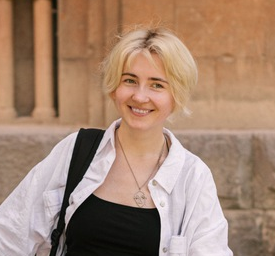

Привет, я Юлия.
Проектирую и разрабатываю
сайты и веб-сервисы.
Работаю с частными специалистами и небольшими компаниями. Составляю структуру страниц, делаю макеты в Figma, пишу код, проверяю сайт на разных экранах и публикую его.
С 2022 по 2025 год работала QA-инженером и тестировала веб- и мобильные продукты. Теперь использую этот опыт в разработке: проверяю формы, переходы между страницами и поведение интерфейса.